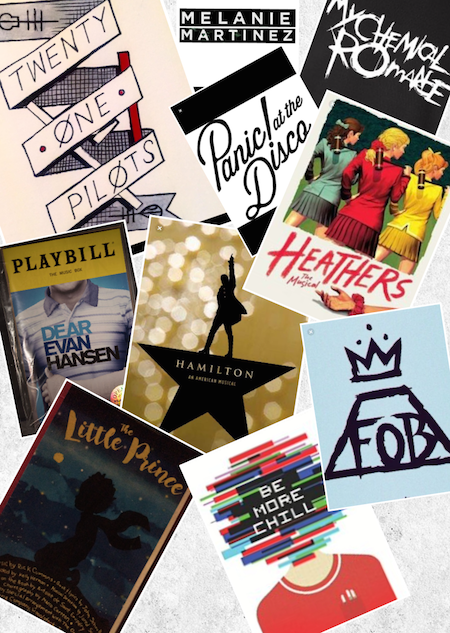

Something that I am very passionate about is art. Yes art as in drawing and painting, but also art as in music or liturature. Art can be found in so many different and wonderful ways. I like to explore and see these many ways because they inspire me.
I love music. It's not just one song that I really like to listen to every once in a while. I love music.
From small melodies on a piano or small strums on a ukelele to bands that some people have never even
heard of, to musicals that are just too darn catchy. I almost always have earphones with me because I know
I'll listen to music soon. I listen to music so often. If we can listen to music in class, you know I'll
get my earphones out. I listen to music while doing homework, on car rides, and while playing games. No
matter what, I always have a song (or entire albums/musicals or two) stuck in my head.

I'd like to thank every author in the world for books. Books are just so awesome. Imagine, creating an entire new universe in your own head, with your own made up characters and events. Then putting it on paper for everyone else to see. Imagine. Entire new worlds to become a part of. New friends and new adventures, books can take me in and get me lost in their world of ink and I don't intend on finding my way back.
And finally, what I named this title after. Art. As I said in my hobbies I like to draw. Now, when you think "art" you probably think of painting, but there is more to it- there always is. There is sketching, drawing, coloring, and what I had brought to your attentin earlier, music and writing. I like to to all of these. I guess I'm a very artistic person. Art however is taking the idea, and putting it out there in the world, not only for the world to see, but to understand. I like drawing because there are so many different styles to it. There could be a cartoon style or even a realistic style, but everyone has there own style. There is no, you must do it this way or that way, you just do it and it turns out fine.